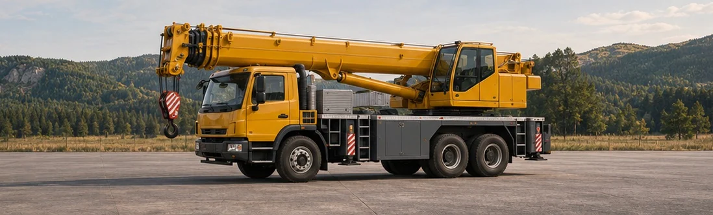

Легковые автомобили
Подбор в Китае, Японии и Южной Корее по классу, модели и комплектации.

Легковые автомобили из Китая, Японии и Южной Кореи. Грузовые машины, спецтехника и комплектующие.
Подбор в Китае, Японии и Южной Корее по классу, модели и комплектации.

Грузовые и специальные автомобили на шасси ISUZU. Автовозы LUXUDA и SAS (BLIZZARD).

Карьерные и дорожные машины KOMATSU, VOLVO, CAT, SANY и XCMG. Бульдозеры KOMATSU, CAT и SHANTUI.
Оригинальные детали и аналоги для карьерной, дорожной, строительной и грузовой техники. Подбор по модели, серийному номеру, VIN или артикулу.
Ходовые позиции — в Благовещенске. По другим деталям проверяются запасы на складах в Китае.
Дробильно-сортировочные комплексы, бетонные заводы, оборудование для переработки металлолома, станки для рукавов высокого давления и электростанции.
Подбор поставщика, сверка спецификации, приёмка груза и проверка комплектности. Партии можно объединить на складе.
Международная перевозка и таможенное оформление. Для негабаритной техники подбирается трал. Доставка по России и СНГ до согласованного адреса.